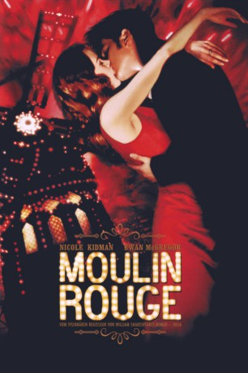

#760 Moulin Rouge!
Auszeichnungen: 2 Oscars gewonnen für 6 Oscars nominiert 3 GoldenGlobes gewonnen 1 BAFTA-Awards gewonnen
 
 IMDB-Wertung: 7.6 / 10
IMDB-Wertung: 7.6 / 10  Metascore: 66
Metascore: 66 
In Paris, der Stadt der Liebe, dreht sich 1900 alles um ihren berühmten Nachtclub, das Moulin Rouge. Auch der Schriftsteller Christian kann sich der sinnlichen Atmosphäre und dem Charme des Hauses nicht entziehen. Vor allem aber fasziniert ihn Satine, die unnahbare Kurtisane, die von einer Karriere als Schauspielerin träumt. Kurzentschlossen gibt sich Satine einem reichen englischen Duke hin, um die Finanzierung eines aufwändigen Theaterstücks im Moulin Rouge zu sichern. Doch da tritt Christian in Satines Leben und erobert ihr Herz im Sturm...
Jahr: 2001
Dauer: 127 Minuten
FSK: 12
Land: USA Studio: 20th Century FoxTonspuren: DTS - ,
Untertitel: Deutsch,
Auflösung: 1080p (1920x800) Größe: 12185 MB
Genre: Drama, Musical, Liebe
Regisseur:  Baz Luhrmann
Baz Luhrmann
Drehbuch: Baz Luhrmann, Craig Pearce
Soundtrack: Craig Armstrong
Darsteller:
 Nicole Kidman als Satine
Nicole Kidman als Satine Ewan McGregor als Christian
Ewan McGregor als Christian John Leguizamo als Toulouse-Lautrec
John Leguizamo als Toulouse-Lautrec Jim Broadbent als Harold Zidler
Jim Broadbent als Harold Zidler Richard Roxburgh als The Duke
Richard Roxburgh als The Duke Jacek Koman als The Unconscious Argentinean
Jacek Koman als The Unconscious Argentinean Matthew Whittet als Satie
Matthew Whittet als Satie Natalie Mendoza als China Doll
Natalie Mendoza als China Doll- Lara Mulcahy als Môme Fromage
 David Wenham als Audrey
David Wenham als Audrey Kylie Minogue als The Green Fairy
Kylie Minogue als The Green Fairy- Ozzy Osbourne als The Green Fairy
 Deobia Oparei als Le Chocolat
Deobia Oparei als Le Chocolat- Jonathan Hardy als Man In The Moon
- Plácido Domingo als Man In The Moon
- Kiruna Stamell als La Petite Princesse
- Tara Morice als Prostitute
- Sue-Ellen Shook als Montmartre Dancer / Baby Doll
- Mark Hodge als Montmartre Dancer
- Lorry D'er Cole als Parisian Dancer
- Nandy McClean als Twin
- Maya McClean als Twin
- Kip Gamblin als Latin Dancer
- Liliya May als Mermaid
- Cass Cumerford als Audience Member , uncredited
- Matthew Dale als The Hand , uncredited
 Nash Edgerton als Stagehand , uncredited
Nash Edgerton als Stagehand , uncredited- Coralie Eichholtz als Hooker #1 , uncredited
- Nicole Fantl als Audience Member , uncredited
- Karinna Greksa als Street Urchin , uncredited
- Greg Poppleton als Nervous Nellie , uncredited
- Brett Praed als Stagehand , uncredited
- Neeraj Singh als Oscar Wilde boy , uncredited
- Garry McDonald als The Doctor
- Kerry Walker als Marie
- Caroline O'Connor als Nini Legs In The Air
- Christine Anu als Arabia
- Linal Haft als Warner
 Keith Robinson als Le Petomane
Keith Robinson als Le Petomane- Peter Whitford als Stage Manager
- Norman Kaye als Satine's Doctor
- Arthur Dignam als Christian's Father
- Carole Skinner als Landlady
- Anthony Young als Orchestra Member
- Dee Donavan als Character Rake
- Johnny Lockwood als Character Rake
- Don Reid als Character Rake
- Daniel Scott als Absinthe Drinker / Guitarist
- Veronica Beattie als Montmartre Dancer / Tattoo
- Lisa Callingham als Montmartre Dancer
Datei: X:\2001\Moulin Rouge! (2001, FSK12, 1920x800).mkv seit 20.03.2015
Festplatte: HD 1996-2002
 Es gibt insgesamt 102 Filme in der Gruppe '2001'
Es gibt insgesamt 102 Filme in der Gruppe '2001'